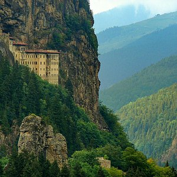
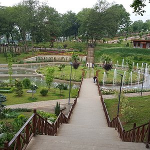
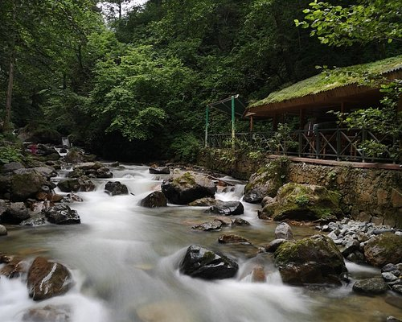

Trabzon (Romeika: Τραπεζούντα, Trapezounta, Lazca: Ťrabuzeni), Trabzon ilinin merkezi olan şehridir. Karadeniz Bölgesi'nin Doğu Karadeniz Bölümü'nde yer alan ilin Karadeniz'e kıyısı bulunur. Günümüzde Karadeniz Bölgesi'nin Samsun'dan sonra ikinci büyük kentidir. 12 Kasım 2012 tarihinde kabul edilen büyükşehir yasa tasarısı ile büyükşehir belediyesi olmuş ve merkez ilçe kaldırılarak Ortahisar ilçesi kurulmuştur. Trabzon iki il ile birlikte de "şehzadeler şehri" olarak anılır. Evliya Çelebi Trabzon için şöyle demiş: "Bu şehre küçük İstanbul denilse yeridir. İrem bağları gibi süslü bir şehirdir burası.'' Fatih Sultan Mehmed ise Trabzon'u kuşattığı vakit şöyle söylemiştir: ''Trabzon fethedilmeden İstanbul fethedilmiş sayılmaz.
7 Eylül 2010 tarih ve 27695 sayılı resmi gazetede yayımlanan karar ile birlikte 7 belde ve 29 köy tüzel kişilikleri kaldırılarak belediye sınırlarına dahil edilmiştir.
Bölgede çeşitli dönemlerde yapılan arkeolojik kazı ve yüzey taramalarında Yontma Taş (Alt Paleolitik dönem) Çağı'na ait Acheulien ve Mousterien tipi (el baltaları, kazıyıcılar, yonga aletler), Orta Taş Çağı (Mezolitik)'e ait mağaralar Kalkolitik Çağ'a ait yerleşim izlerine rastlanmıştır. Bronz Çağı'nda Karadeniz kıyısında Kaşkalar adlı domuz besleyen ve kendir eken savaşçı bir halkın varlığı Hitit kaynaklarında bildirilmektedir...


